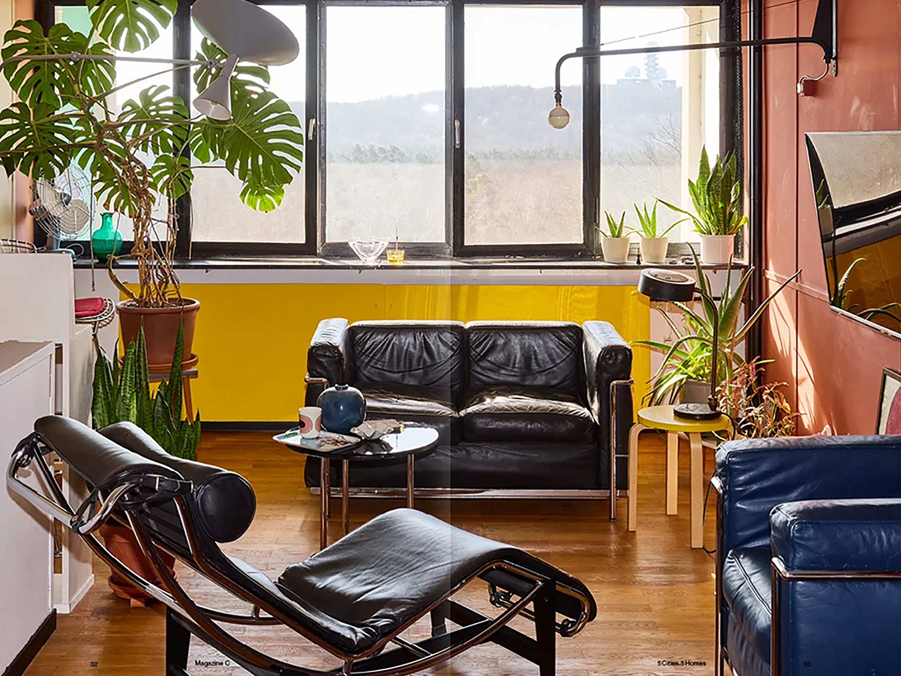
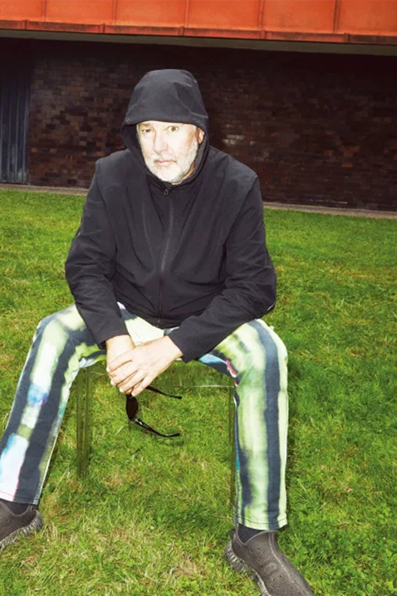
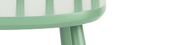
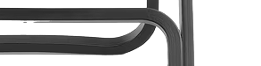
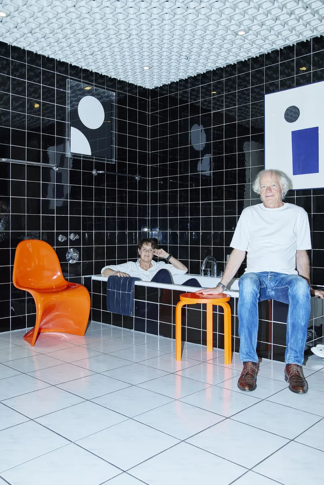
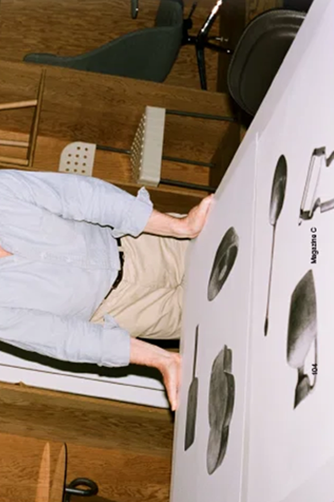

¿QUIÉN ES TEO?
Mi casa y yo
¿Quién es TEO?
Hola, YO SOY TEO! fundador de TEO SILLAS, enamorado del diseño y el placer de sentarse en él.
Coleccionista y heredero de TEO mi abuelo. Un artesano de los que ya no quedan. Aquí en TEO SILLAS descubriras diseños familiares y descubrimientos que he ido recolectando a lo largo de mi vida. Me encanta viajar y traer nuevas texturas, nuevas formas, etc. Todo curado por los Teo.
Un negocio familiar lleno de amor por la artesanía y años de experiencia


OBJETIVOS TEO
Nuestro objetivo es devolverle a sentarse la importancia que merece. En TEO SILLAS reunimos piezas únicas, nacidas en el taller o encontradas en viajes, para que cada casa tenga una silla con historia.
Apostamos por la artesanía, el diseño honesto y los materiales que envejecen bien. Queremos que cada persona encuentre la silla que encaja con su espacio y con su forma de vivir, y que la disfrute durante muchos años.


LIMITADA
CURADASGALERIA DE TEO







SÍGUENOS EN INSTAGRAM